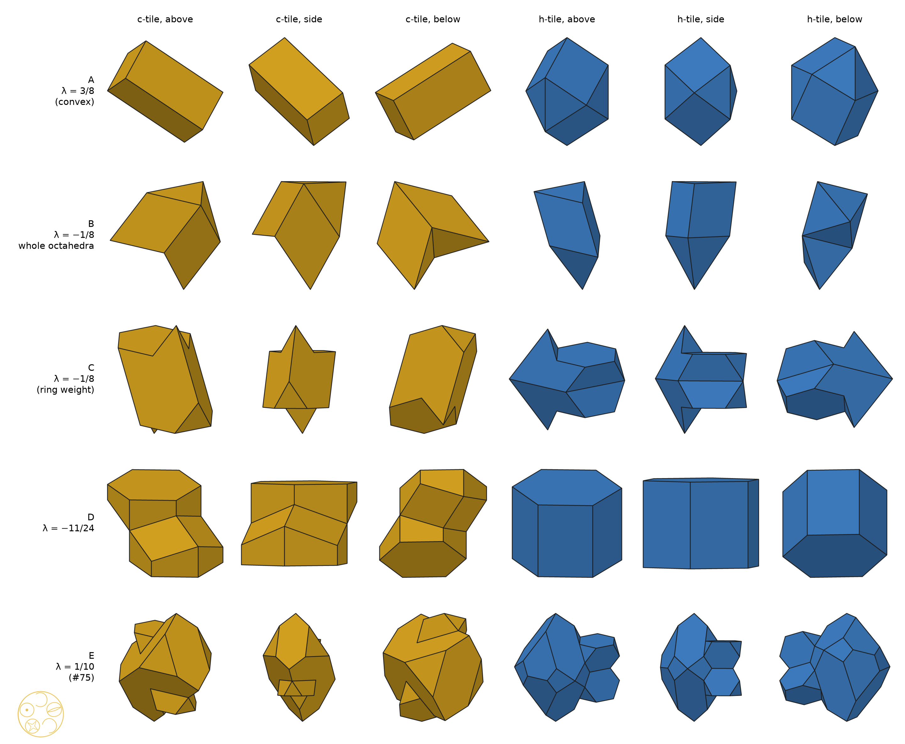
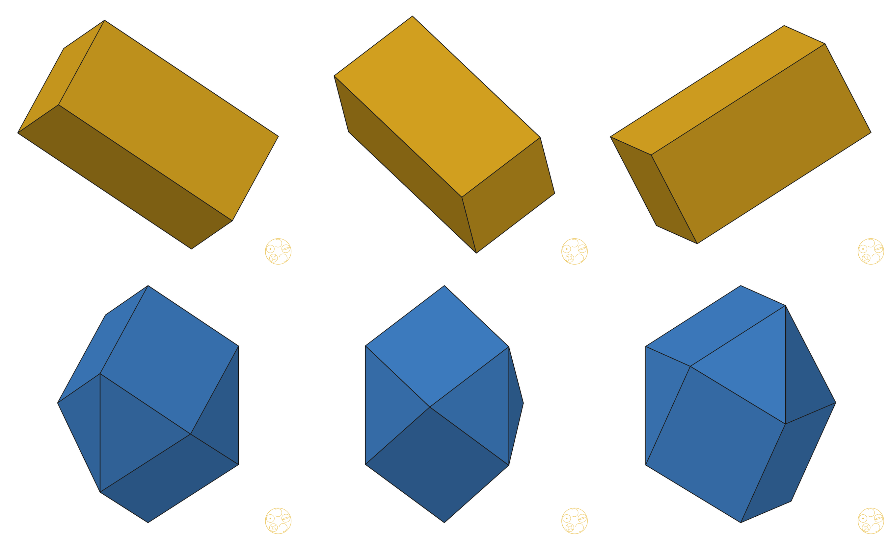
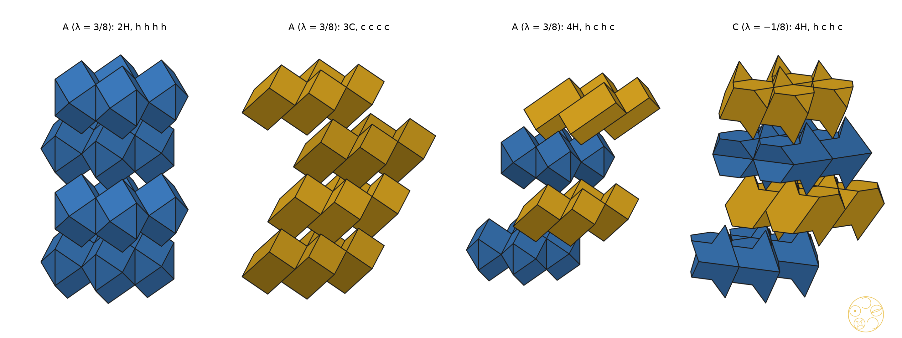

Every close-packed stacking from two single solids, at every weight
Build a crystal from layers of balls and share out the space between them, one tile per ball. Paper #75 found that only two tiles are ever needed, one for each way a layer can sit between its neighbours. But one of the two came apart into two towers that touched at a single point, like two cones tip to tip. Slide one tower over by one ball and the two towers lean on each other along a whole face. Nothing else changes, so the two tiles still build every stacking. At one weight both tiles become as plain as a brick.
As in #57 and #75: unit balls sit in close-packed layers (triangular lattices of spacing 1) at heights kd, d = √(2/3). A layer is h if the layers above and below it sit on the same position, and c otherwise. The tile of layer L, for one ball, is four pieces: the top half of the octahedral piece of the gap below, the two tetrahedral pieces next to the layer, and the bottom half of the octahedral piece of the gap above. All cuts follow the Rule of Halves at weight λ. Some pieces vanish: the octahedral halves at λ = 3/8, the c-tile's tetrahedral parts for λ ≤ −3/8 and the h-tile's at λ = −11/24. The two-tile theorem of #75: in every stacking, each tile is carried onto the c-tile or the h-tile by one motion that maps its layer to itself.
The move. Let Λ be the lattice of in-layer translations (integer combinations of two ball spacings). Replace any piece of the c-tile, or of the h-tile, by its translate by a vector of Λ. For a tile type, the shift is the choice of one vector per piece.
Part (i) is proved below for every λ. Part (ii) is an exact computation at each listed weight. A proof over whole stretches, in the manner of #75 [1], is not yet done (Section 7). Part (iii) is exact.
Lemma (the move keeps the layer). Fix a layer. Its tiles are the Λ-translates of one tile T = P1 ∪ … ∪ P4, so the pieces of the layer are the translates Pi + v, v ∈ Λ. If each Pi is replaced by Pi + ti with ti ∈ Λ, the set {Pi + ti + v} is the same set of pieces. So the new tile T′ is again a fundamental region for Λ in the layer, and its Λ-translates fill the layer exactly as T's did. □
Part (i). By the two-tile theorem of #75, the tile of layer L in any stacking is M(Tc) or M(Th) for a motion M that maps the layer to itself. Its linear part is a symmetry of the triangular lattice, so it maps Λ to Λ. Give that tile the shift M(ti) ∈ Λ. It is then the image under M of the shifted reference tile, so it is congruent to the shifted c-tile or h-tile. By the Lemma, the layer is still filled by the same pieces. The layers of #75 fill space, so the shifted tiles do too. Where two layers meet, nothing has changed, so any tile still sits on any tile. □
Part (ii). At each weight, exact rational arithmetic in lattice coordinates (exactfaces.py of the ring-build study [3]):
All 402 weights pass. □ At the 12 weights where we drew the joining faces (from −11/24 to 3/8), the face that joins the towers lies in a plane through the layer's ball and contains the edge from that ball to a neighbouring ball. For λ ≤ −1/4 the two octahedral halves meet there; at −1/8 an octahedral half meets a tetrahedral piece; for λ ≥ 0 the two tetrahedral pieces meet.
Part (iii). Exact: every merged face of each tile is a facet of the convex hull of its corners, and the face counts match (6 and 12). □
Independent check of (i). For each pair of the family we checked, without using #75, all 42 stackings of period 2 to 6 (words in A, B, C, starting with A, with no letter twice in a row). For each layer, every piece of the shifted tile is matched to exactly one piece of the census engine up to a vector of Λ. Every tile has the volume of one layer cell. Every piece of the tile is tested against every piece of every other tile copy nearby (layers L − 2 to L + 2 within the period, in-layer copies −3 to 3), and an exact separating plane must be found. Tiles that do not overlap and each have one cell's volume fill space. Result: 0 overlaps in 7 472 (λ = 3/8), 6 480 (−1/8, whole octahedra), 11 232 (−1/8), 4 080 (−11/24) and 13 520 (1/10) piece pairs.
The shifts in the theorem were found by search, not guessed. For each tile type, piece 0 stayed put and the other pieces took every lattice shift (a, b) with −2 ≤ a, b ≤ 2: 15 625 choices with four pieces, 25 at the ends. This was done at 16 weights covering every stretch of the walk. We kept the face-joined choices, merged congruent ones, and ranked them by face count (coplanar faces merged), hull ratio (volume over convex-hull volume) and neck (the least contact area over all ways to split a tile's pieces into two groups, in unit triangles √3/4). The c-tile was joined at every weight; the best choice was always the tower shift of the theorem. The h-tile was already one solid. DICTO proposed keeping every pair found as one family. Its five members:
| member | λ | split | c faces | h faces | hull ratio c, h | notes |
|---|---|---|---|---|---|---|
| A · HexOct 3/8 | 3/8 | Rule of Halves | 6 | 12 | 1, 1 | both convex: brick + twisted cube |
| B · HexOct −1/8 (whole octahedra) | −1/8 | whole octahedra (§6) | 8 | 10 | 6/7, 6/7 | regular octahedron + two regular tetrahedra, two ways |
| C · HexOct −1/8 | −1/8 | Rule of Halves | 10 | 14 | 0.800, 0.735 | the ring-build weight; towers joined along two trapezoids |
| D · HexOct −11/24 | −11/24 | Rule of Halves | 18 | 8 | 0.783, 1 | h-tile a regular hexagonal prism |
| E · HexOct 1/10 | 1/10 | Rule of Halves | 24 | 30 | 0.745, 0.778 | the tiles of #75, made whole |

At the 16 search weights the c-tile has 18 faces (λ ≤ −3/8), 26 (−1/3, −7/24), 34 (−1/4, −3/16), 10 (−1/8), 24 (from −1/16 to 1/3) and 6 at 3/8. Only the ends give convex tiles. On the dense grid the least contact area falls below 10−4 unit triangles just above λ = −3/8 (c), just above −11/24 (h) and just below 3/8 (both). These are not thin necks of the shape: there a whole piece shrinks to nothing (the c-tile's tetrahedral parts, the h-tile's tetrahedral parts, and the octahedral halves). The members chosen sit away from such points, except A, where the vanishing pieces are already gone.

At λ = 3/8 the octahedral halves are gone, and the tetrahedral pieces of the cubic stacking are cubes of edge 1/√2. Their body diagonals are upright. The two cubes of a c-layer, joined face to face by the shift, make a 1 × 1 × 2 brick, so every c-layer is a layer of bricks. The h-tile is two pieces that already share a face. Their union is convex, with 12 faces, 11 corners and 21 edges:
Three squares meet at the top corner and three at the bottom corner, as at two opposite corners of a cube. The six triangles form a band between them. Both tiles have the volume of one layer cell, 1/√2. Every close-packed stacking at λ = 3/8 is therefore a stack of layers of bricks (c) and layers of twisted cubes (h), in any order.
The twisted cube tiles space (for example in hcp, as a layer of h-tiles on h-tiles) but is not a parallelohedron. Its triangles are not centrally symmetric, and every face of a parallelohedron is (Minkowski [6]). So it does not tile by translations alone; in hcp, consecutive layers of twisted cubes are not translates of each other.

A two-tile system needs each layer's tile to depend on that layer's letter alone. For each whole piece we found exactly which layers its shape depends on, over words covering all contexts, at λ = −1/3, −1/8, 1/10 and 1/4. At −1/3, 1/10 and 1/4 the whole octahedral piece takes 3 shapes and depends on both layers around its gap. Each tetrahedral piece depends on the layer of its base. So, of the splits into whole pieces and mid-plane halves, only the Rule of Halves gives two layer tiles at these weights. At λ = −1/8 every piece is a regular tetrahedron or octahedron, whatever the stacking, and two more splits work:
Library (ask-library over the 302-reference library; 6 queries):
Read:
Hits, not relevant or not read:
Web (7 queries; pages seen in the search results, not read in full, except Grünbaum–Shephard above):
Verdict. The brick, the hexagonal prism and the rhombohedron are classical. The twisted cube was not found in any source checked. The layer statement, that every close-packed stacking is a string of bricks and twisted cubes, was not found either. Goldberg's lists of space-filling dodecahedra have not been read, so nothing here is claimed as new until they are.
One lattice step of one tower turns the HexOct c-tile into a single solid, and the move keeps every stacking and every joint. The h-tile was already one solid. At λ = 3/8 both tiles are convex: every close-packed stacking is a string of layers of two-cube bricks and of twisted cubes. Five such pairs, A to E, form the HexOct family.
Computational methods. Python 3 with exact rationals. Census engine of #53 and tiles.py of #75 unchanged. connect.py (search over shifts), dense.py (402 weights), verify.py (42 stackings), split_check.py and alt_split.py (Section 6), describe.py (exact faces and convexity), render.py and plate.py (figures: z-buffer renderer with solid faces and crisp edges). Floating point is used only for areas in rankings, hull ratios and drawings.
[1] DICTO, "HexOct: Two Tiles for Every Stacking", paper #75, DICTO DOI: 10.5281/zenodo.23737639 (2026).
[2] DICTO, "The Rule of Halves: the Holes of Every Close-Packed Stacking", paper #57, DICTO DOI: 10.5281/zenodo.23647898 (2026).
[3] DICTO, "Building the HexOct tiles from rings", build sheet, studies/2026-10-31-hexoct-ring-build (2026), not published.
[4] H. Lalvani, "Transformational part-count in layered octahedral-tetrahedral truss configurations", NASA Technical Memorandum 102635 (1990).
[5] R. Gabbrielli, Y. Jiao and S. Torquato, "Families of tessellations of space by elementary polyhedra via retessellations of face-centered-cubic and related tilings", Physical Review E 86 (2012) 041141.
[6] H. Minkowski, "Allgemeine Lehrsätze über die konvexen Polyeder", Nachrichten der Gesellschaft der Wissenschaften zu Göttingen (1897) 198–219.
[7] B. Grünbaum and G. C. Shephard, "Tilings with congruent tiles", Bulletin of the American Mathematical Society (N.S.) 3 (1980) 951–973.
[8] E. S. Fedorov, Elements of the Study of Figures (1885), chapter 13 (library notes in English).